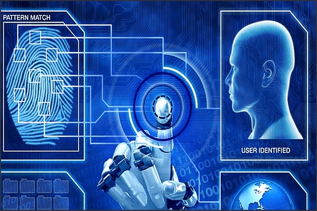

Due to the advancement in technologies, the iris printing has been discovered to be the most accurate type of biometric technology as they have discovered that as one ages their fingerprint changes, therefore leading to a possible inaccurate identification. Biometric technology is the analysis of specific human traits such as fingerprints, DNA, voice pattern, eye retinas and irises and hand measurements. Biometric systems keep advancing as technology continues to progress. These systems are used for authentication and identification purposes and appear in a variety of forms, such as: fingerprints, voice patterns, palm printing and iris scanning. Biometric Systems undergo three primary steps: enrollment, storage and comparison. Enrollment being the first step in identification which is a record of information, perhaps a name or identification number in partner with a specific trait, such as a fingerprint. With that said, images or recordings are not stored they are altered into a code or graph. Furthermore, the second step in the verification of a person is, storage. The information from the individual is captured and stored within a model database. However, if an individual has used a biometric system before then the step of enrollment will be needless and the system will skip to the step of comparisons. In the third step, the identification mode, the biometric information is compared with the information that was stored during enrollment. The system then examines the data being received from the individual to confirm it is identical to the one that has already been enrolled into the system. If the individual is lying about their identity the system will deny the request, or in other words, deny the fingerprint or voice scan etc. received. Along with the three primary steps in identifying an individual, there are also three blocks: a sensor, a computer and software. The first block is the sensor, the sensor has the responsibility of obtaining all the important data and is generally silicon-based. The second block, usually a computer, has the task of pre-processing and storing the information from the scanner, as well as it must remove components from the sensor in order to magnify the input. The third block has three tasks itself; it examines the trait used on the scanner, converts the information into a graph or code and lastly, compares. All types of biometric systems undergo these same steps. The purpose of these technologies is for authentication or identification reasons. Each system performs enrollment, storage and comparisons, along with the three blocks; a sensor, a computer and a software. Every one of these steps has their own responsibilities which are all crucial in the verification of a person.
Due to the advancement in technologies, the iris printing has been discovered to be the most accurate type of biometric technology as they have discovered that as one ages their fingerprint changes, therefore leading to a possible inaccurate identification. Biometric technology is the analysis of specific human traits such as fingerprints, DNA, voice pattern, eye retinas and irises and hand measurements. Biometric systems keep advancing as technology continues to progress. These systems are used for authentication and identification purposes and appear in a variety of forms, such as: fingerprints, voice patterns, palm printing and iris scanning. Biometric Systems undergo three primary steps: enrollment, storage and comparison. Enrollment being the first step in identification which is a record of information, perhaps a name or identification number in partner with a specific trait, such as a fingerprint. With that said, images or recordings are not stored they are altered into a code or graph. Furthermore, the second step in the verification of a person is, storage. The information from the individual is captured and stored within a model database. However, if an individual has used a biometric system before then the step of enrollment will be needless and the system will skip to the step of comparisons. In the third step, the identification mode, the biometric information is compared with the information that was stored during enrollment. The system then examines the data being received from the individual to confirm it is identical to the one that has already been enrolled into the system. If the individual is lying about their identity the system will deny the request, or in other words, deny the fingerprint or voice scan etc. received. Along with the three primary steps in identifying an individual, there are also three blocks: a sensor, a computer and software. The first block is the sensor, the sensor has the responsibility of obtaining all the important data and is generally silicon-based. The second block, usually a computer, has the task of pre-processing and storing the information from the scanner, as well as it must remove components from the sensor in order to magnify the input. The third block has three tasks itself; it examines the trait used on the scanner, converts the information into a graph or code and lastly, compares. All types of biometric systems undergo these same steps. The purpose of these technologies is for authentication or identification reasons. Each system performs enrollment, storage and comparisons, along with the three blocks; a sensor, a computer and a software. Every one of these steps has their own responsibilities which are all crucial in the verification of a person.
References
Biometrics. (2019, November 23). Retrieved from https://en.wikipedia.org/wiki/Biometrics.
What is Biometric Technology. (n.d.). Retrieved from https://www.biometriccentral.com/what-is-biometric-technology/.
Global, I. F. S. E. C. (2019, May 14). Biometric security systems: a guide to devices, fingerprint scanners, facial recognition, access control. Retrieved from https://www.ifsecglobal.com/global/biometric-security-systems-guide-devices-fingerprint-scanners-facial-recognition/